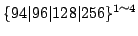
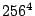

我々は 2.2 節で述べた『UTF-2000 方式』の実証 を目的に XEmacs UTF-2000 を開発した。 この章では、主に、文字データベースに基づく文書編集系 (text editor) としての観点から XEmacs UTF-2000 について概説する。
XEmacs-UTF-2000（図 3.1) は XEmacs [6]
と呼ばれる対話型統合環境を基にしている。XEmacs は GNU Emacs
[4] と呼ばれる拡張可能なエディタを中心とした対話型統合環
境を整理・拡張し、絵なども扱えるようにしたものである 。一方、Mule
(MULtilingual enhancement of GNU Emacsen) [3] は電子技術総合研
究所の半田剣一氏が中心となって開発している GNU Emacs の多言語拡張で、
現在は GNU Emacs に統合されている。この Mule 機能を XEmacs に統合した
XEmacs-Mule の開発も進められており、XEmacs の一部として配布されている。
XEmacs UTF-2000 はこの XEmacs-Mule を基に大幅に改変したものである。
。一方、Mule
(MULtilingual enhancement of GNU Emacsen) [3] は電子技術総合研
究所の半田剣一氏が中心となって開発している GNU Emacs の多言語拡張で、
現在は GNU Emacs に統合されている。この Mule 機能を XEmacs に統合した
XEmacs-Mule の開発も進められており、XEmacs の一部として配布されている。
XEmacs UTF-2000 はこの XEmacs-Mule を基に大幅に改変したものである。
GNU Emacs および XEmacs は Emacs Lisp 言語を使って機能を拡張することが でき、実際に Emacs Lisp で記述されたさまざまなアプリケーションが作成さ れ利用されている。例えば、GNU Emacs/XEmacs の中で電子メールやネットニュー スを読み書きすることができるし WWW 頁を見ることができる。しかし、これ らは元々 Latin-1 (ISO-8859-1) などの 1 byte の符号化文字集合でしか利用 可能ではなかった。
これに対し、Mule は GNU Emacs/XEmacs の利便性・拡張可能性をそのままに、
利用できる符号化文字集合を大幅に拡張したものであり、さまざまな文字を表
示する機能と各種言語用の入力機能をはじめとする多言語化機能を提供する。
Mule 機能を持った GNU Emacs/XEmacs では GNU Emacs/XEmacs の機能がさま
ざまな文字・言語で利用可能となる。
Mule では文字は符号化文字集合の種類を表す charset-id と符号位置の 組で表現される。charset-id は最大 128 個が同時に利用可能である。但し、 利用可能な符号化文字集合は ISO 2022 [1] の 94 文字集合、96 文字集合、94×94 文字集合、96×96 文字集合に限られる。Big5 のような ISO 2022 の図形文字集合の構造に適合しないものは ISO 2022 の構造に合う ように変換して扱う必要がある。また、文字表現空間は 19 bit であり、既に 利用可能な空間が枯渇してきている。さらに、Mule では文字は charset-id と符号位置の組で表現されるので、符号化文字集合が異なれば本来同じ文字で あっても異なる文字として扱われてしまうという問題もある。
XEmacs UTF-2000 は GNU Emacs, XEmacs, Mule の利点を継承しつつ、これら の問題を解決するために以下に述べるような拡張・改変を行った。
XEmacs UTF-2000 は、文字属性の集合による文字表現というモデルに基づいて、 文字データベースを参照することによって文字を処理する。このため、文字デー タベースを利用しやすいように内部表現を変更している。文字表現空間を 30 bit に拡大したため、同時に利用できる文字数は大幅に増えている。文字は、 文字 idと呼ばれる文字オブジェクトの id で内部的に表現され、この 文字 id を用いて文字オブジェクトを参照して、処理が行なわれる。
文字オブジェクトは文字属性の集合として定義され、固有の「文字 id」が割 り当てられる。文字を定義するために XEmacs UTF-2000 では define-char と いう組込み関数を用意している。
関数 define-char (attributes)文字属性 attributes で表現される文字オブジェクトを定義し、 その文字オブジェクトを返す。
文字属性 attributes は連想リストである。
(define-char
'((name . "CJK RADICAL SECOND TWO")
(general-category symbol other) ; Informative Category
(bidi-category . "ON")
(mirrored . nil)
(total-strokes . 1)
(<-radical
((ucs . #x4E5A)
))
(ideograph-cdp . -21)
(chinese-big5-cdp . #x8C5D)
(ucs . #x2E83)
))
この他、文字や文字属性を扱うために次のような関数を用意している：
関数 get-char-attribute (character attribute)文字オブジェクト character の属性 attribute の値 を返す。
(get-char-attribute ?あ 'name) → "HIRAGANA LETTER A"
関数 put-char-attribute (character attribute value)文字オブジェクト character の属性 attribute の値 を value に設定する。
(get-char-attribute ?あ 'foo) →nil (put-char-attribute ?あ 'foo 1) →1 (get-char attribute ?あ 'foo) →1
関数 find-char (attributes)In order to find a character object by a character attribute, a builtin function find-char may be convenient. This function retrieves the character that has specified attributes.
関数 map-char-attribute (function attribute &optional range)A map function for character attributes is also available. This function is useful in finding characters with a character attribute, or processing by a character attribute,
This function maps function over entries in attribute, calling it with two arguments, each key and value in the table.
Range specifies a subrange to map over and is in the same format as the range argument to 'put-range-table'. If omitted or t, it defaults to the entire table. See Fig 3.2 for an example using this function.
関数 char-attribute-alist (character)You can get every attributes of a character as an association-list by a built-in function char-attribute-alist.
This function returns the alist of attributes of character.
関数 char-attribute-list ()You can get the list of character attributes by a builtin function char-attribute-list.
This function returns the list of all existing character attributes.
なお、文字属性に関しては 4 章で詳説する。
XEmacs UTF-2000 processes characters based on the UTF-2000 model, that is, it operates on character objects and their attributes stored in its character database. For this purpose, XEmacs UTF-2000 modifies and extends the internal character and string representations.
In Mule, its internal representation depends on the structure of
graphic character set of
ISO/IEC 2022 [1]. In this paper, such kind of CCS used for the
internal representation of Mule is called Mule-charset.
Each character is represented by a pair of Mule-charset and its code
point. The internal character representation is separated by
7bit-segments. It is designed to use bit calculus, and thus very
sparse. The internal string representation is a kind of multi-byte
encoding. ASCII characters are represented by ASCII code points.
Other characters are represented by 2 to 4 bytes sequence. For this
case, the first byte called leading-byte specifies a CCS. The
following bytes indicate a code point
of
ISO/IEC 2022 [1]. In this paper, such kind of CCS used for the
internal representation of Mule is called Mule-charset.
Each character is represented by a pair of Mule-charset and its code
point. The internal character representation is separated by
7bit-segments. It is designed to use bit calculus, and thus very
sparse. The internal string representation is a kind of multi-byte
encoding. ASCII characters are represented by ASCII code points.
Other characters are represented by 2 to 4 bytes sequence. For this
case, the first byte called leading-byte specifies a CCS. The
following bytes indicate a code point . Every valid multi-byte sequence can be
mapped to a corresponding character representation, however possible
character representation may not be mapped to any multi-byte sequence.
The code space is limited by two parameters: charset-id (basically
same with leading-byte) and characters representation. Number of
charset-ids has to be smaller than 128. Each character is represented
by 19-bit integer 14 bit can be used for code point and 5 bit can be
used for charset-id of 2-bytes-set. However full 14-bit cannot be
used for a code point. As the character representation has to satisfy
the structure of ISO/IEC graphic character set, 33 to 126 or 32 to 127
can be used for each 7-bit segment (octet) .
. Every valid multi-byte sequence can be
mapped to a corresponding character representation, however possible
character representation may not be mapped to any multi-byte sequence.
The code space is limited by two parameters: charset-id (basically
same with leading-byte) and characters representation. Number of
charset-ids has to be smaller than 128. Each character is represented
by 19-bit integer 14 bit can be used for code point and 5 bit can be
used for charset-id of 2-bytes-set. However full 14-bit cannot be
used for a code point. As the character representation has to satisfy
the structure of ISO/IEC graphic character set, 33 to 126 or 32 to 127
can be used for each 7-bit segment (octet) .
The character and string representation of Mule is too limited to implement a large character database. It is better to guarantee 1-to-1 mapping between character representation and string representation, and they should not depend on any coded character sets. Perhaps a simple, non-segmented, linear space is better than complex, segmented, sparse space. In addition, a 19-bit code space seems too narrow even for UCS [2] (Unicode [5]). To support UCS, at least a 21-bit code space is required. Therefore, we decided to change the internal representation.
In the XEmacs UTF-2000, each character object has a character-id. Each character-id is represented by a 30-bit integer. In strings or buffers, each character object is represented by a multi-byte sequence that is a character-id encoded in UTF-8 [2]. It is wide enough to represent various kind of characters at the same time. It can support every Unicode character. In addition, user can define a lot of other characters.
XEmacs UTF-2000 では、文字は関数 define-char で文字属性の集合を指定す ることによって定義される。しかし最初に文字を定義する時に何も文字が存在 しないとすれば、文字の定義プログラムを文字列で表現できないことになる。 これでは不便であるので、関数 define-char で文字を定義する前からあらか じめ定義されている文字を設けている。これを組込み文字 (builtin character)と呼ぶ。
組み込み文字は、文字属性を一切持たないことを除けば、一種の文字オブジェ クトとして扱われる。各組み込み文字は、文字属性を一切持たないにも関わら ず、ある符号化文字集合の符合位置を文字属性として持っているように解釈さ れる。このような仕組みを用いることにより、XEmacs UTF-2000 はブートスト ラップ処理において文字定義なしに符号化文字列を読み込むことができる。
なお、文字定義によって定義された文字と同様に、組み込み文字に対しても、 文字属性を付加することは可能であり、その場合、その組み込み文字は付加さ れた文字属性を持った通常の文字として再定義される。
ところで、定義プログラムを表現するための組込み文字としてであれば、ISO 8859-1 の文字が存在すれば十分ある。しかし、大量の文字定義なしに、少な くとも字形が確認できるように、UCS の文字や ISO 2022 の図形文字集合の文 字、文字鏡の文字などを組込み文字としている。
XEmacs UTF-2000 では、文字は符号化文字集合によって表現されてはいない。こ のため、Mule におけるような意味での Mule-charset は必要ない。しかし、 既存の文字符号の世界と情報交換したり、既存のフォントを利用したり、 既存の実装との互換性を実現し既存のアプリケーションを利用す るために、つまり可搬性の面から、Mule-charset に相当するものがあると便 利である。そこで、XEmacs UTF-2000 では符号化文字集合の抽象したものとして coded-charsetを設けている。
XEmacs UTF-2000 の coded-charset に関する API は XEmacs-Mule における Mule-charset に関する API の上位互換になるように設計されている。 XEmacs-Mule における Mule-charset と同様に、charset 型が存在し、 charset 型オブジェクトはシンボルで表現される名前を持つ。Mule では Mule-charset は文字の内部表現に依存しており、その構造上、 94 文字集合、 96 文字集合、 94×94 文字集合、 96×96 文字集合の４種類 に限定されていた。一方、XEmacs UTF-2000 ではそのような制約は存在しない ため、  文字集合に拡張され、符号位置が 4 byte 以下で表現できさえすれば、任意の符号化文字集合を利用できる。たとえ ば、UCS の基本多言語面 (BMP) [2] は 256×256 文字集合で表現でき 、UCS-4 全体もまた  文字集合で表現できる。
XEmacs UTF-2000 の coded-charset は文字の内部表現と直接関係しないため、 coded-charset に収録された各文字とその coded-charset における符号位置 の対応表によって、文字と符号位置の関係を表現する必要がある。この対応表 として、符号位置から文字を得るためのdecoding-tableと、文字から符 号位置を得るためのencoding-tableの２種類を設けている。このうち、 後者は文字属性の一種として、すなわち、coded-charset の名称を 属性名とする文字属性は encoding-table の要素と見倣されるようになっ ている。関数 define-char もしくは関数put-char-attribute で coded-charset の名称を持つ文字属性を指定すると、その値は指定された coded-charset の符号位置とみなされ、指定されたcoded-charset の decoding-table も同時に設定される。この仕組みにより、陽に変換表 を指定したり、内部表現に言及したりせずに、 さまざまな符号化文字集合を表現可能である。